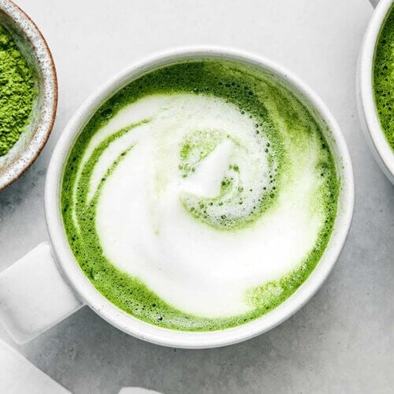
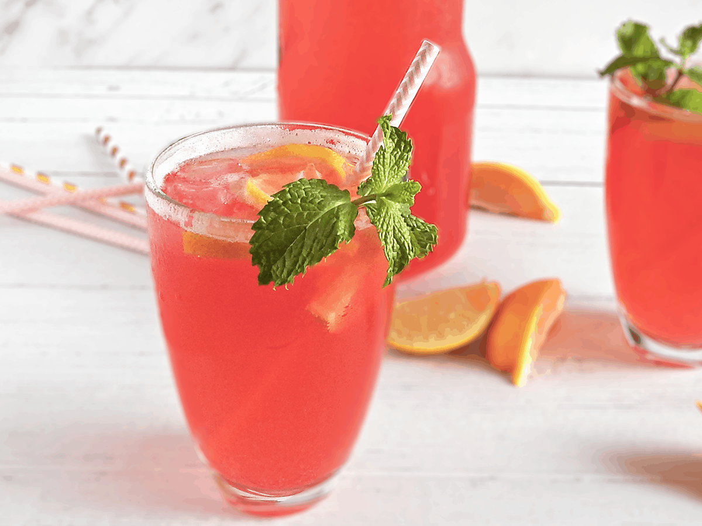

5 favorite drinks
- Matcha Latte
- Mango Smoothie
- Iced Coffee
- Pink Lemonade
- Gingerale
My go-to drink...
Mangos are one of my favorite fruit, and I love smoothies.

Another go-to drink; it's never too cold for an iced coffee. Here's a recipe to make your own: Iced Coffee
My drink order at a restaurant.
Yes, Gingerale tastes way better on an airplane.